WHOLE SCENES FROM ONE LINE
Each scene below started as one sentence. Claude Fable 5.1 (the director) planned the sky, the ground and the
vegetation together; three fine-tuned 3B models (Qwen2.5-Coder-3B, one per segment) wrote those layers on a local GPU; the
verifier rendered each layer in the game and a Claude judge scored it, sending failures back to the same 3B model for up to
three rounds. No layer was written or edited by a larger model.
Every scene has two ways to play it. Accepted layers only is what the pipeline would ship: segments the
verifier did not accept keep the normal game layer. Everything the specialists wrote also swaps in their best
rejected attempt, so you can see what the small models actually produced, failures included. Rejected layers are labelled
with the reason they were rejected; a layer whose code never loaded cannot be shown.
Beach · lush tropical afternoon
"a lush tropical afternoon on the beach: giant fan palms along the promenade, golden sand with a wide shiny wet band, a few puffy clouds out over the sea"
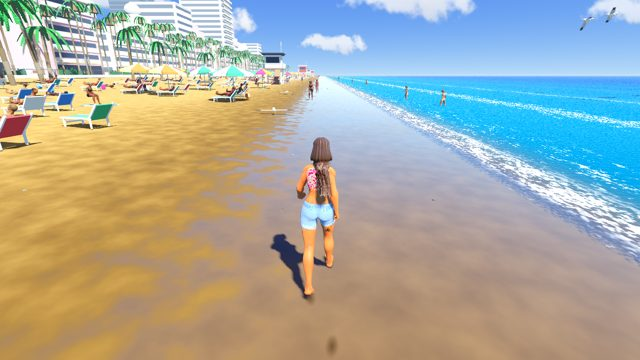
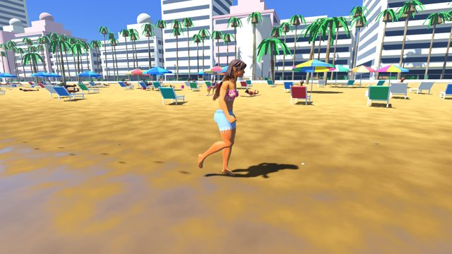
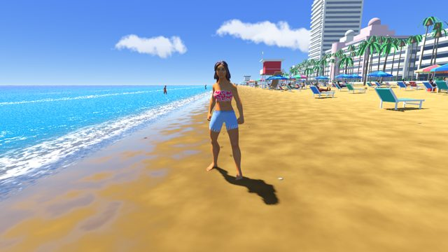
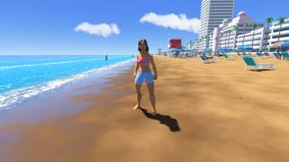
- ground: accepted on the first draft (judge 7/10)
- vegetation: accepted on the first draft (judge 8/10)
- sky: not accepted after 3 rounds; best attempt judge 6/10, too few clouds for the brief (cloud cover 4/10)
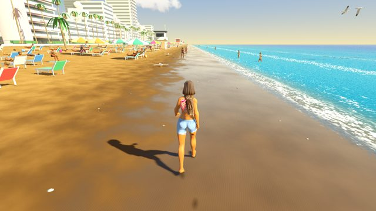
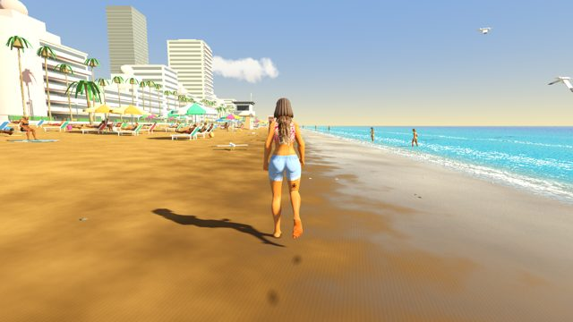
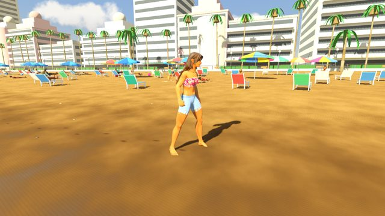
Street · dusk
"dusk on a quiet suburban street: young leafy trees, dry yellow-green lawns, worn grey asphalt with a single dashed centre line, the sky fading from orange to deep blue"
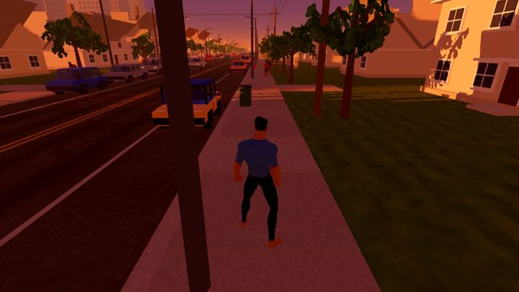
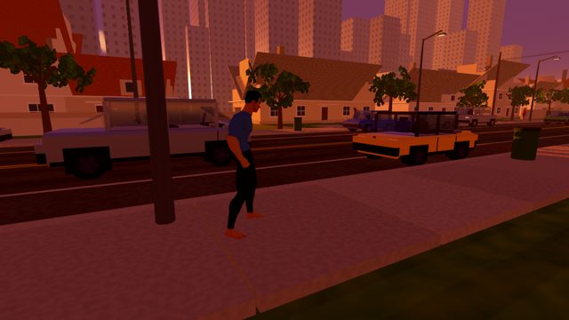
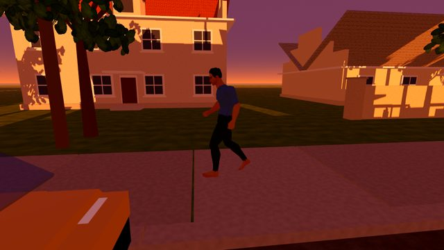


- sky: accepted on the first draft (judge 7/10)
- vegetation: accepted on the first draft (judge 7/10)
- ground: not accepted after 3 rounds; best attempt judge 8/10, rejected for its cost: 62 extra draw calls against a budget of 10
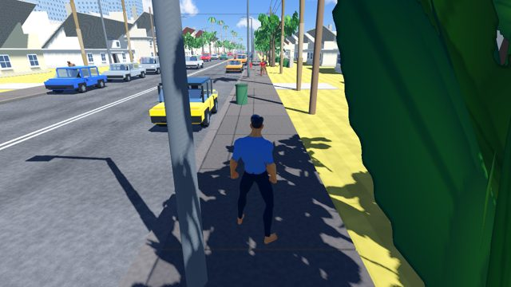
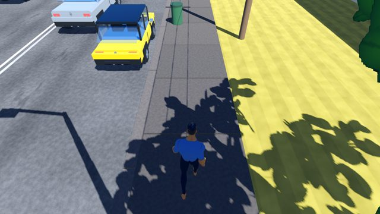
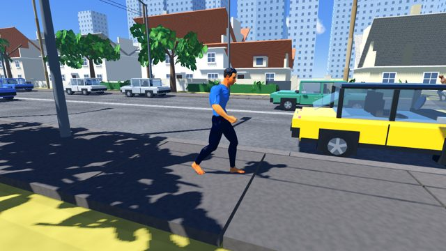
Street · overcast palm-lined morning
"an overcast morning on a manicured palm-lined street with fresh black asphalt, granite grey kerbs and dark mown lawns"
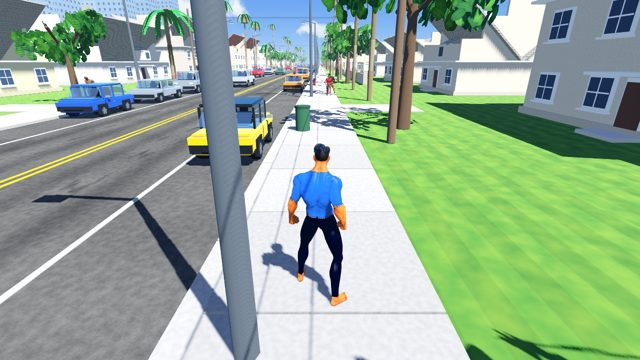
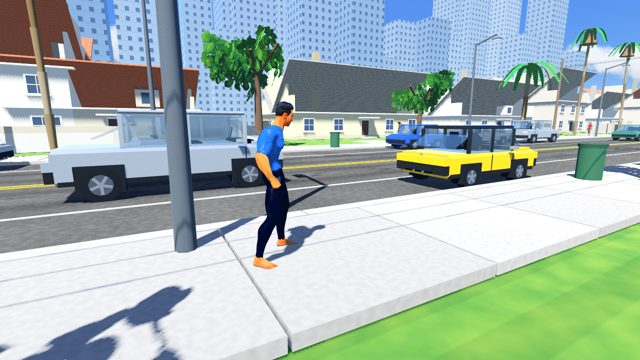
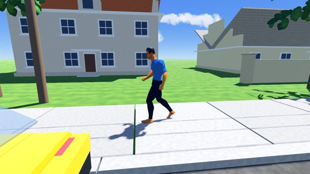

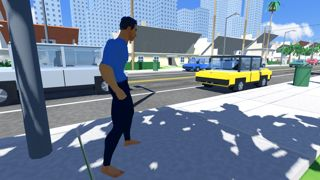
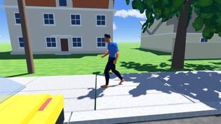
- vegetation: accepted on the first draft (judge 8/10)
- sky: not accepted after 3 rounds; best attempt judge 6/10, a flat white-grey haze with no cloud shapes (cloud cover 5/10)
- ground: none of its 3 attempts loaded (it used a StreetContext constant that does not exist), so both links keep the normal ground
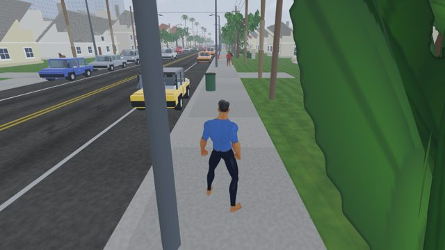
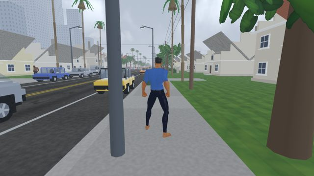
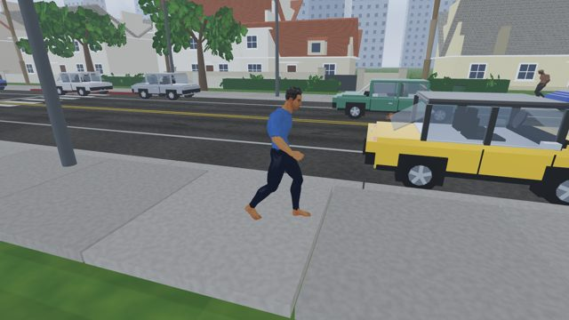
Street · overcast palm-lined morning, with the composite verifier
The same one-line brief, run again with the composite verifier: after each layer passes on its own, a Claude judge scores the assembled scene as a whole and sends the layers it blames back to their specialists.
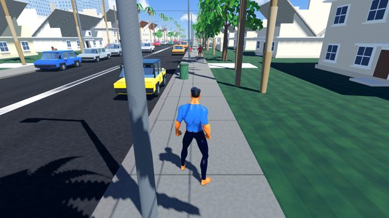
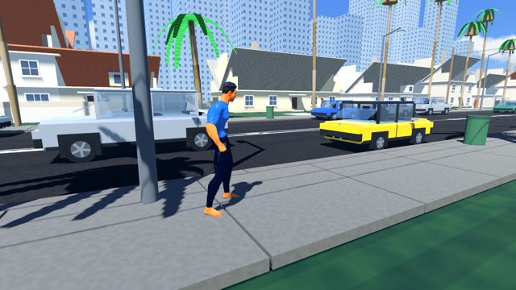
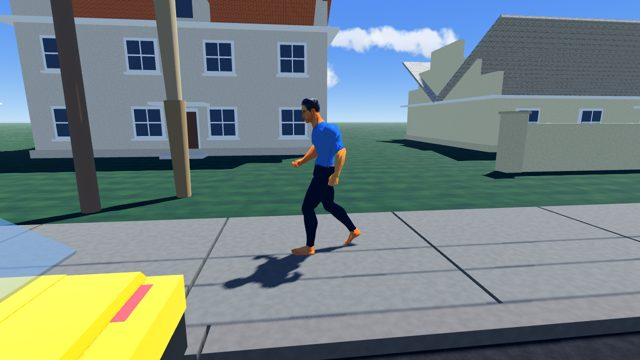
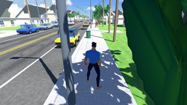


- vegetation: accepted on the first draft (judge 8/10)
- ground: accepted on its own (judge 7/10), then blamed by the composite judge for blown-out sidewalk slabs with dark gaps, and revised until it passed again (judge 8/10)
- sky: not accepted after 6 rounds, 3 of them after the composite judge asked for a grey overcast deck; best attempt judge 6/10, haze too subtle (5/10)
- whole scene: the composite judge failed it twice (overall 5, then 4) because the sky stayed clear, so the pipeline would not publish this scene
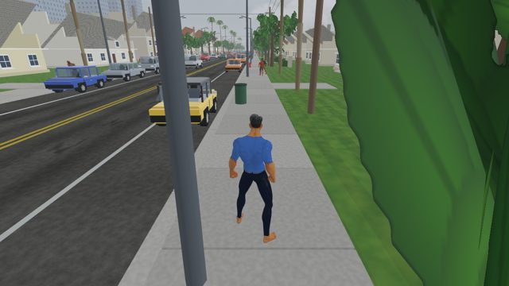
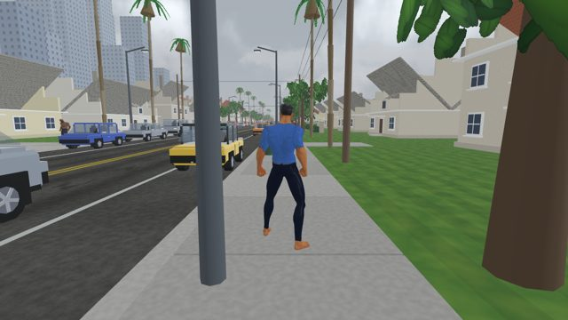
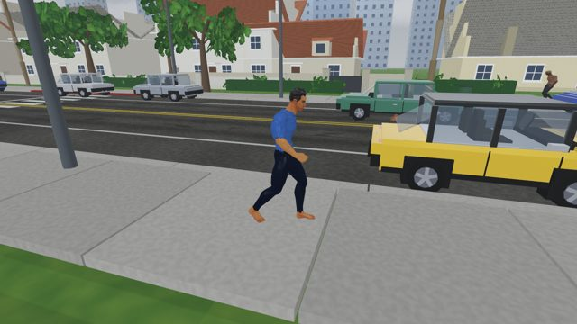